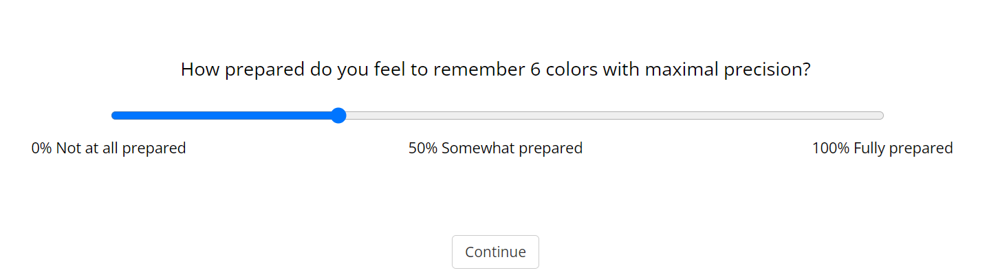
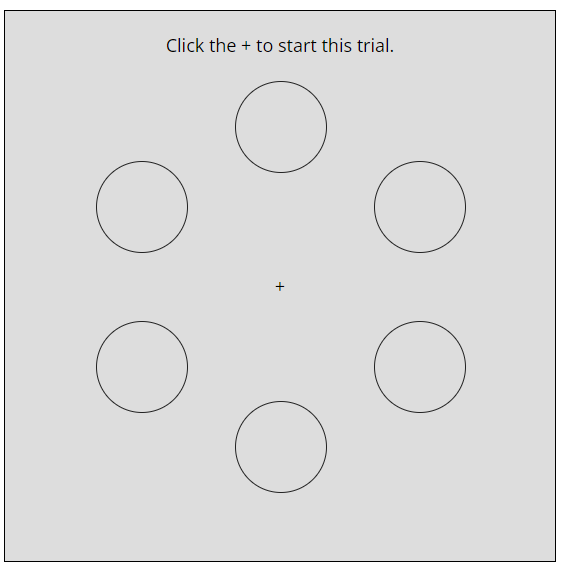
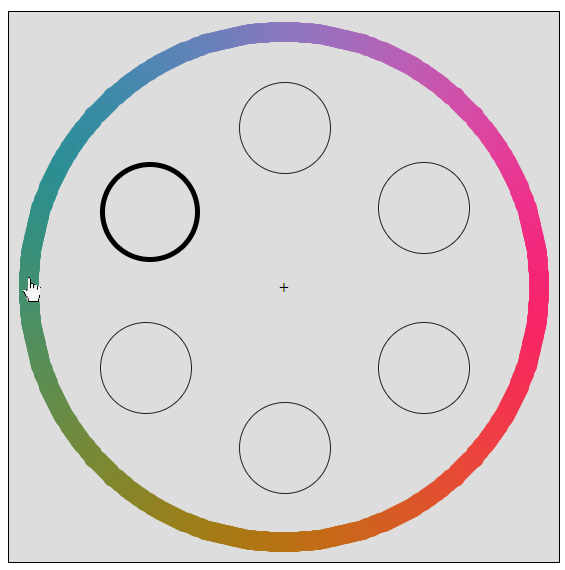
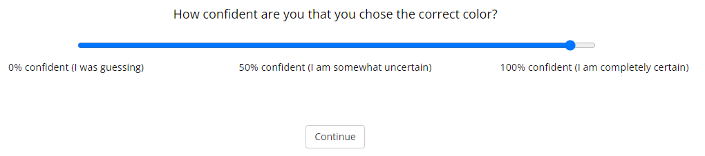

<!DOCTYPE html>
<html>
<head>
<title>Face memory experiment</title>
<script src="jspsych.js"></script>
<script src="jspsych-continuous-image-percep.js"></script>
<script src="jspsych-continuous-image-wm.js"></script>
<script src="jspsych-html-keyboard-response.js"></script>
<script src="jspsych-html-slider-response.js"></script>
<script src="jspsych-survey-likert.js"></script>
<script src="jspsych-instructions.js"></script>
<script src="jspsych-fullscreen.js"></script>
<script src="jspsych-survey-text.js"></script>
<link	href="jspsych.css"	rel="stylesheet" type="text/css">
<style>
body {
  background-color: gray;
}
#jspsych-progressbar-container {
  background-color: #000000;
  color: #CCCCCC;
}
.jspsych-instructions-nav { margin-bottom: 100px; }
#consentDiv { font-size: 9pt; text-align: justify; }
</style>
</head>
<body>
<script>
/* Require a new-ish browser: 
------------------------------------------ */
function supportsLiterals() {
  try { return eval("''===``") }
  catch(e) { return false; }
}
if (!supportsLiterals()) {
	var txt = "Sorry, this experiment requires a newer browser, so yours is not able to be used. The latest Chrome, Firefox, Safari or Edge all work.";
	alert(txt); 
	document.body.onload = function() { document.body.innerHTML = txt; };
}

var factors = {
	set_size: [2,4],
}
var full_design = jsPsych.randomization.factorial(factors,35);
/* Instructions 
------------------------------------------ */
 
var trialList = [];
trialList.push({
  type: 'fullscreen',
  fullscreen_mode: true
});

trialList.push({
	type: "instructions",
		pages: ['<p>Before beginning, you must give informed consent. CONSENT WILL GO HERE </p> '],
  show_clickable_nav: true
})	

trialList.push({
	type: "instructions",
		pages: ['<p>Welcome and thank you for participating! This experiment has 70 trials, and last approximately 15 minutes. In this experiment you will be asked to remember two or faces and their spatial locations. </p>  <p>You will start each trial by reporting how prepared you feel to remember either 2 or 4 faces (depending on how many you have to remember on that trial).  You will use a continuous slider scale to report on your preparedness. For example, if you have to remember 4 faces you will be asked this<p> </img> </p> <p> Please try to think carefully about how prepared you feel, and use the full slider scale to make your responses. </p> <p> After you report on your preparedness you will see either 2 or 4 faces in different spatial locations. For example, the screen will look like this for a trial where you are shown 4 faces:</p><p> </img> </p><p>The faces will be shown very quickly, so make sure you are really ready when you click on the fixaction cross.</p><p>  Your task is to remember the faces and their spatial locations the best that you can.</p><p> After a brief delay, you will be shown a face wheel, that is a lot of faces around a circle, and a black outline around a location where one of the faces was shown. Here is an example of the face wheel:</p><p> </img> </p><p> You will need to move your mouse to click on the face that you think best matches the color of the face that was shown in the spatial location witht the dark outline around it (you will be shown an exact copy of each face in that spatial location, so you can make your report as precise as possible).</p><p> Once you find the face that best matches the face you were shown, click on it.</p> <p> After you choose a face, you will be asked to report how confident you are in your response, using a 100-point confidence scale like this one:</p><p> </p><p> You will use your mouse to report on your confidence. On this trial, I was pretty confident that I chose the correct face, so I chose confidence rating close to 100 (completely certain). Please think carefully about your confidence ratings, and choose one that best matches your certainty in your answer.</p> '],
  show_clickable_nav: true
})	


var faceWheels = ["big90.png"];

for (var i=0; i<70; i++) {

if (full_design[i].set_size == 2){

	trialList.push({
		type: 'html-slider-response',
		stimulus: '<p> How prepared do you feel to remember two faces as accurately as possible?</p>',
		require_movement: true,
		labels: ['0% Not at all prepared','50% Somewhat prepared','100% Fully prepared']
	});}else{
	trialList.push({
		type: 'html-slider-response',
		stimulus: '<p> How prepared do you feel to remember four faces as accurately as possible?</p>',
		require_movement: true,
		labels: ['0% Not at all prepared','50% Somewhat prepared','100% Fully prepared']
	});}

		trialList.push({
		  type: 'continuous-image',
		  wheel_spin: false,
      	   bg_color: "gray",
		  set_size: full_design[i].set_size,
		  display_time: 1000,
		  num_placeholders: full_design[i].set_size,
		  image_sprite: faceWheels[0],
		  radius: 130,
		  feedback: false,
			on_load: function() {
			  var curWidth = parseInt(window.getComputedStyle(document.getElementById('contImgMemoryBox')).width);
				var browserWidth = parseInt(window.getComputedStyle(document.body).width)-100;
			  var curHeight = parseInt(window.getComputedStyle(document.getElementById('contImgMemoryBox')).height);
				var browserHeight = parseInt(window.getComputedStyle(document.body).height)-50;
				var ratioW = browserWidth/curWidth;
				var ratioH = browserHeight/curHeight;
				var scaleFactor = (ratioW<ratioH) ? ratioW-0.1 : ratioH-0.1;
				if (scaleFactor<1) { scaleFactor=1; }
				document.getElementById('contImgMemoryBox').style.transform = "scale("+scaleFactor+")";
			},
		  data: {
				wheelName: faceWheels[0],
				setSize: full_design[i].set_size,
		 }
	});
	trialList.push({
		type: 'html-slider-response',
		stimulus: '<p> How confident are you that you chose the correct face?</p>',
		require_movement: true,
		labels: ['0% confident (I was guessing)','50% confident (I am somewhat uncertain)','100% confident (I am completely certain)']
	});

	trialList.push({
		type:'html-keyboard-response',
		stimulus:'',
		choices: jsPsych.NO_KEYS,
		trial_duration: 2000
	})
}

trialList.push({
	type: 'survey-text',
	preamble: "Thank you! You're just about done. If you would, please tell us about yourself:",
	questions: [
		{prompt: "How old are you?", name: 'age', rows: 1, columns: 5}, 
		{prompt: "Gender:", name: 'gender', rows: 1, columns: 5},
		{prompt: "Any comments? Was it fun? Any technical difficulties?:", name: 'comments', rows: 3, columns: 40}
	],
	button_label: "Submit", 
	on_finish: saveData
});


function saveData() {
	 d = { 
		"sonaCode": jsPsych.data.getURLVariable('code'),
		"curTime": jsPsych.startTime(),
		"userAgent": navigator.userAgent,
		"windowWidth": window.innerWidth,
		"windowHeight": window.innerHeight,
		"screenWidth": screen.width,
		"screenHeight": screen.height,   
		"totalTime": jsPsych.totalTime(),    
		"interactionData": jsPsych.data.getInteractionData().json(),
		"trialStruct": jsPsych.data.get().json()
	};
	var data = new FormData();
	data.append('id', jsPsych.randomization.randomID(15));
	data.append('experimenter', 'Maria');
	data.append('experimentName', 'Faces_2afc360_2sess1');
	data.append('curData', JSON.stringify(d));
  var xhr = new XMLHttpRequest();
 
	xhr.onload = function() {
	
	};
	xhr.send(data);
}

jsPsych.init({
	timeline: trialList,
	show_progress_bar: true,
	show_preload_progress_bar: true,
	auto_update_progress_bar: true,	
	preload_images: ['SpacesNoBG/small90.png', 'SpacesNoBG/medium90.png','SpacesNoBG/big90.png'],
	message_progress_bar: "Progress on entire study:",
	use_webaudio: false,
	experiment_width: 750,
	default_iti: 100,
	exclusions: {
		min_width: 700,
		min_height: 500
	}
});
			
			
			
/* HELPERS:
***************************************** */			
			
/* Get random int: */
function getRandomIntInclusive(min, max) {
	min = Math.ceil(min);
	max = Math.floor(max);
	return Math.floor(Math.random() * (max - min + 1)) + min;
}

/* Make sure all numbers in an array are between 0 and 360: */
function wrap(v) {
	if (Array.isArray(v)) {
		for (var i=0; i<v.length; i++) {
			if (v[i]>=360) { v[i]-=360; }
			if (v[i]<0) { v[i]+=360; }
		}    
	} else {
		if (v>=360) { v-=360; }
		if (v<0) { v+=360; }
	}
	return v;
} 
</script>
</body>
</html>